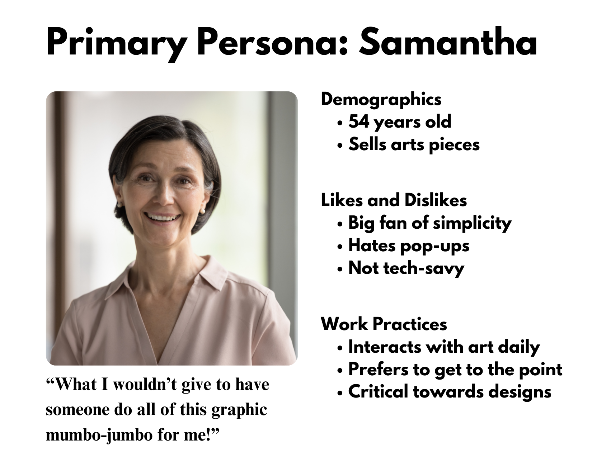
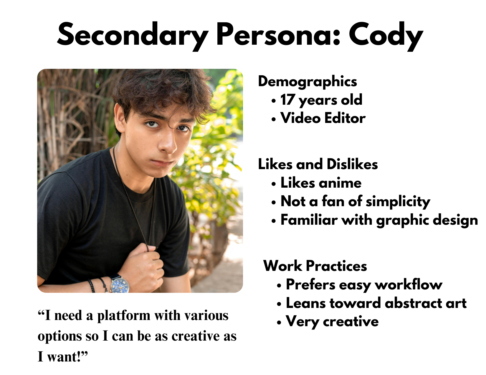

Website Design Scenarios
User personas:


Use Case Documents
| Use Case Name | Client requests quote for a logo |
|---|---|
| Goal | Request quote for a logo. |
| Description | Client accesses the website, uses the navigation system to find the services page, browses the services, selects the desired one (graphic designing), and fills in required information to obtain a quote for it. |
| Actors | Client, Website (Services system). |
| Preconditions | Client already has a design / color scheme / general idea in mind. |
| Main Success Scenario |
1. Client enters website 2. Client navigates to services page 3. Client browses the available services 4. Client selects the desired service 5. Client fills in the required information 6. Client submits the form 7. Website generates three free previews (if applicable) 8. Website sends a confirmation email with quotes. |
| Extensions |
3a. Client doesn't approve of the previews. "What to do if you don't see what you're looking for?" section will be in the FAQs section. Additionally, the virtual assistant will be there to provide assistance and/or send them through to an actual person for more help. 5a. Client doesn't fill in required information. The form will not submit and will prompt the client to fill in the required information. |
| Post Conditions | Client has received quote for their selected service. |
| Use Case Name | Client wants a website to showcase their work |
|---|---|
| Goal | Obtain a portfolio website. |
| Description | Client accesses the website, uses the navigation system to find the services page, browses the services, selects the desired one, works with a representative to get their website completed. |
| Actors | Client, Website (Services system), Representative |
| Preconditions | Client already has content to put on the page. |
| Main Success Scenario |
1. Client enters website 2. Client navigates to services page 3. Client browses the available services 4. Client selects the desired service 5. Client fills in the required information and gets in contact with a representative 6. Client works with a representative to complete the website |
| Extensions |
5a. Client doesn't reach a representative. A "Contact" page will be in the navigation system allowing users to get further assistance. 6a. Client doesn't like the website. Since they will be working alongside our web developers, they will be able to make changes before the final product is complete. |
| Post Conditions | Client gained a creative, modern, and satisfying portfolio website. |
Use Case Scenarios
Primary Persona
At noon on March 6th, Samantha, a 54-year-old artist looking to establish a strong brand identity for her business, visits the Apex Technology website from her office to request a quote for a custom logo design. Navigating to the Services page, she selects the “Request a Quote” option and browses additional services before choosing Logo Design. She then fills out the quote request form, providing details about her business, preferred colors, style, and inspiration. After submitting the form, she receives a confirmation email acknowledging her request, bringing her one step closer to building her brand.
Secondary Persona
At 3 PM on March 5th, Cody, a 17-year-old video editor looking to showcase his work to future employers, visits the Apex Technology website from his laptop at home to request a portfolio webpage. Navigating to the Services page, he selects the “Web Development” option and contacts a developer through the provided form or chat feature. After discussing his needs and vision for the portfolio, he collaborates with the developer to create a professional webpage that highlights his best work, helping him attract potential clients and job opportunities.